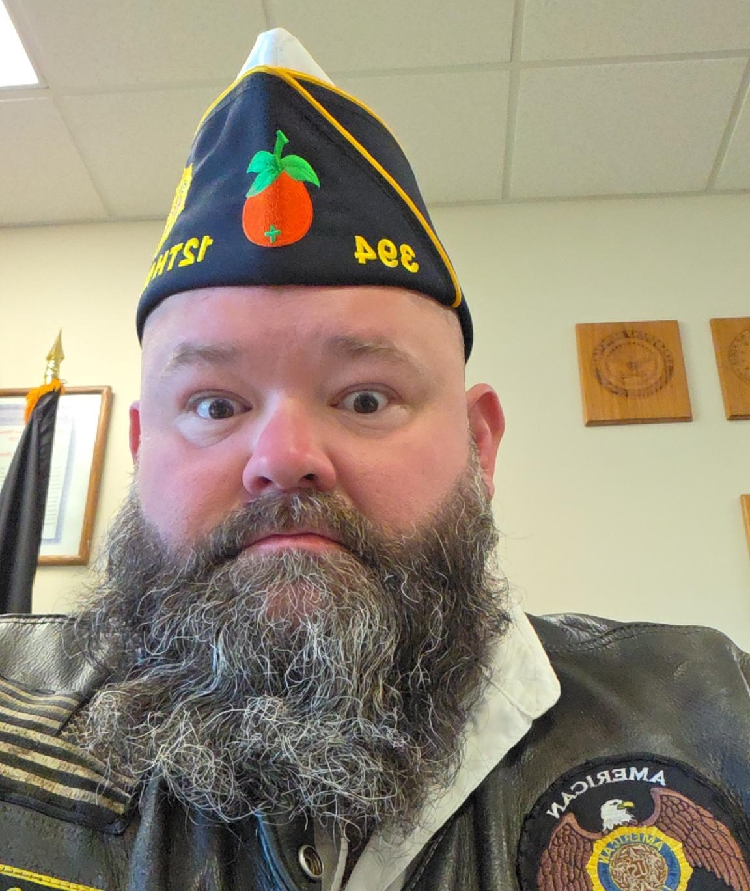
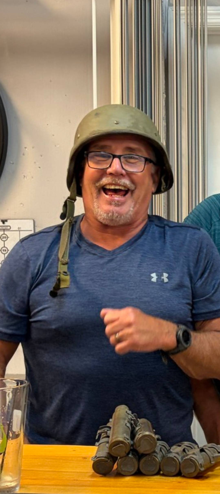
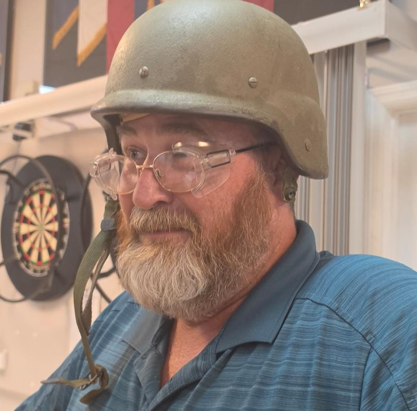
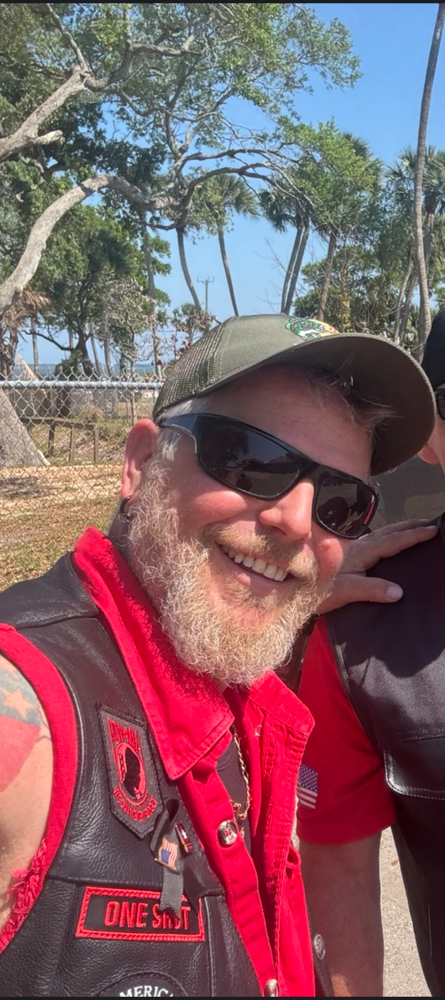

David “TooEasy” Luzader
Coordinates chapter operations, meetings, rides, and service priorities.
Chapter officers
Meet the volunteers who guide Chapter 394 and keep our mission moving forward.

Coordinates chapter operations, meetings, rides, and service priorities.

Supports the Director and helps coordinate chapter activities.
Oversees chapter finances, records, correspondence, and administrative reporting.

Plans safe ride routes, briefings, staging, and group movement.

Supports meeting order, ceremonies, and chapter protocol.
Preserves chapter history, photographs, milestones, and important records.
Coordinates chapter events, volunteers, schedules, and event communications.

Maintains chapter supplies, equipment, merchandise, and inventory.
Provides spiritual support and guidance to members and their families.
“The mission stays simple: serve veterans, strengthen our community, and ride together with purpose.”Chapter 394 leadership statement